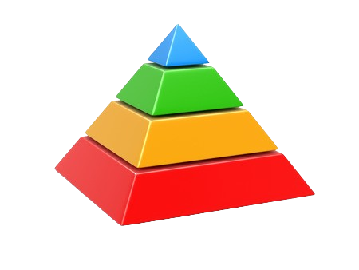

Estudios Sociológicos
La sociología es la ciencia social dedicada al estudio de las sociedades humanas: sus fenómenos colectivos, interacciones y procesos de cambio y de conservación, tomando en cuenta el contexto histórico y cultural en que se hallan insertas. Emplea técnicas y métodos de investigación científica, provenientes de diversas disciplinas y áreas del saber, lo cual le brinda una perspectiva interdisciplinaria para el análisis y la interpretación.
Fundamentos del estudio sociológico:
1. Cultura de consumo
Se basa en analizar cómo influyen los gustos, costumbres y hábitos de consumo en diferentes regiones o segmentos de edad (por ejemplo, niños, adolescentes o adultos).

2. Estratificación social
Se consideran los niveles socioeconómicos para definir precios accesibles.
3. Roles sociales
Identificar quiénes compran y dirigir la publicidad web hacia ese público.

4. Grupos de referencia
Aprovechar redes sociales como forma de influencia positiva en la decisión de compra.
5. Dinámicas de interacción digital
Estudiar cómo los usuarios se relacionan con las tiendas online para optimizar la navegación y experiencia de compra.
Aplicación de los efectos en el desempeño de nuestra empresa GomiYomi:
1. Comunicación interna y externa
Una buena plataforma digital mejora la comunicación con clientes y entre los miembros del equipo.
2. Motivación del personal
Tener metas claras y un entorno colaborativo para aumentar la eficiencia en la preparación y entrega de los pedidos.
3. Innovación
Un diseño adecuado nos permitirá incorporar nuevas funciones.
4. Satisfacción del cliente
Integrar un diseño fácil de usar, atención rápida y variedad de productos para mejorar la experiencia del usuario.
5. Control y monitoreo
La página web muestra las opciones y precios que ofrecemos, al igual que una imagen de referencia, lo que ayuda en la toma de decisiones.